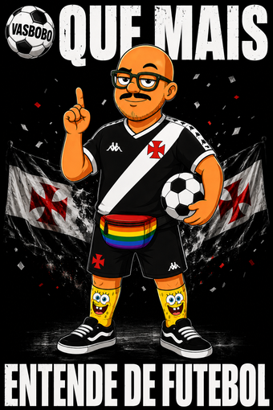
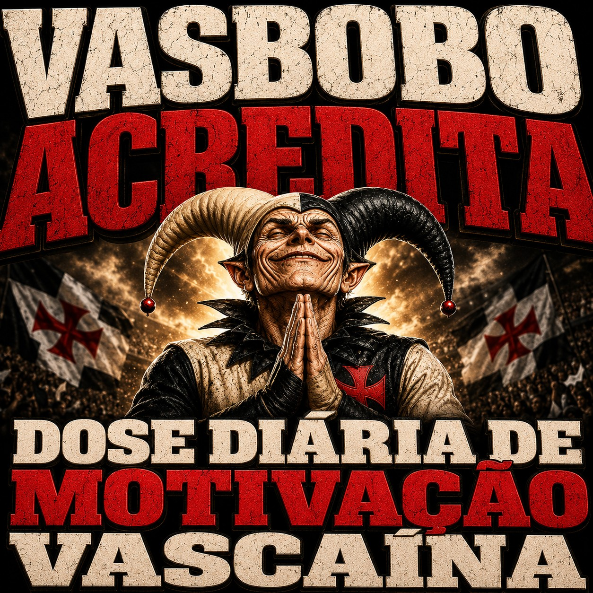

Direto do Bar da Tia
Vasbobo✠
Fala, !
admin


Instale o VASBOBO no seu celular e fica igual um app.
Android: menu (⋮) → "Instalar app" | iPhone: compartilhar → "Adicionar à Tela de Início"
Agora é só arrastar para a tela inicial do celular.
 Castigos
Castigos